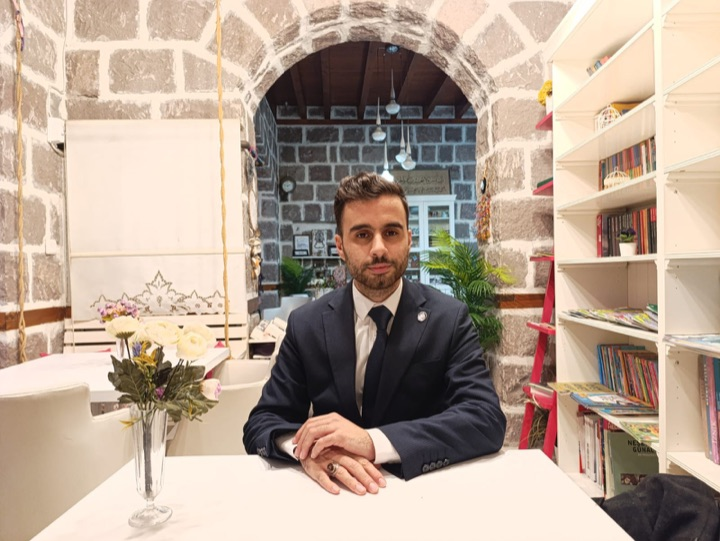

YAPAY ZEKÂ İLE DAVA ANALİZİ VE HUKUK BÜROSU YÖNETİMİ
Hukuk büronuz için
yapay zekâ desteği
CaseBridge, hukuki uyuşmazlıkları ve belgeleri yapay zekâyla analiz ederek olası dava sonuçlarını, riskleri ve hukuki seçenekleri değerlendirmenizi sağlayan bir platformdur.
BUGÜN CASEBRIDGE
Güncel pilot sonuçları
Ekip tarafından bildirilen pilot kapsamı. Bu rakamlar zaman tasarrufunu veya dava başarı oranını ölçmez.
Hukuk büroları
Dava dosyaları
Olasılık Ağacı
Kira bedeli uyuşmazlığı · CB-SONUC-2025/142-1
Mavi yol dosyada kayıtlı kararı gösterir. Bir düğümü seçerek dayanağını ve sonraki dalları inceleyin.
CaseBridge’in arkasındaki ekip
Yapay zekâ, yazılım mühendisliği ve hukuk deneyimini bir araya getirerek avukatların dava hazırlığını ve günlük çalışmalarını destekleyen bir platform geliştiriyoruz.

İzzet Ahmet
İş geliştirme ve iş ortaklıkları
Perpetual Labs bünyesindeki yapay zekâ operasyonları ve iş ortaklıkları deneyimini CaseBridge’in iş geliştirme çalışmalarına taşıyor. ASELSAN’daki mühendislik deneyimiyle teknoloji ve müşteri ihtiyaçları arasında köprü kuruyor; iş ortaklıkları ve ürünün pazara sunulması üzerine çalışıyor.

Emin Merden
Yapay zekâ ve veri
BAUROV’da yazılım ekip liderliği, Baykar’da makine öğrenmesi stajı ve Outlier AI’da dil modeli değerlendirme deneyimine sahip. Bilgisayarlı görü, veri seti hazırlama ve sentetik veri üretimi çalışmalarını CaseBridge’in yapay zekâ ve veri süreçlerine taşıyor.

Hatice Çam
Yazılım altyapısı ve sistem mimarisi
Technarts bünyesinde etkinlik yönetimi platformu ve IP adresi yönetim sistemi geliştirme çalışmalarına katkı sağlıyor. Veritabanları, veri akışları ve uygulama altyapısı üzerine çalışıyor; Perpetual Labs bünyesinde yapay zekâyla sunum hazırlama çalışmalarını da sürdürüyor.

Bengü Özbek
Ekosistem ilişkileri
Lastfall, Autosense ve Technarts deneyimleriyle müşteri ihtiyaçlarının anlaşılması ve teknoloji ekosistemindeki ilişkilerin geliştirilmesi üzerine çalışıyor. CaseBridge’in ürün ihtiyaçları ile ekosistem bağlantılarının bir araya gelmesine katkı sağlıyor.

Ahmet Büyükdağ
Hukuki içerik ve ürün danışmanlığı
İHH’daki gönüllü yönetimi ve proje koordinasyonu, Genç İHH yönetim kurulu ve Hacettepe Ombudsmanlık ve İnsan Hakları Topluluğu kurucu başkanlığı deneyimleriyle hukuki senaryolar, analiz çerçevesi ve hukukçuların ihtiyaçları üzerine çalışıyor.
Sık sorulan sorular
Sık sorulan sorular
Aklınıza
takılabilecekler
CaseBridge dava sonuçlarını kesin olarak tahmin eder mi?
Hayır. CaseBridge, dosyanızdaki bilgilere dayanarak olası senaryolar ve bir yapay zekâ değerlendirmesi sunar. Puan, istatistiksel olarak doğrulanmış bir kazanma yüzdesi değildir. Eksik bilgiler ve model hataları değerlendirmeyi etkileyebilir; nihai karar her zaman bir hukuk profesyonelindedir.
Bir davayı güçlendirmeye nasıl yardımcı olabilir?
Güçlü ve zayıf argümanları, olası itirazları ve eksik bilgileri öne çıkarır. Araştırılacak sorular ve önerilen adımlar hazırlığı somut işe dönüştürmeye yardımcı olur.
Dava analizi ile duruşma simülasyonu arasındaki fark nedir?
Dava analizi, davanıza dayanan çok perspektifli bir değerlendirme raporudur. Duruşma simülasyonu ise vekil rolünü üstlendiğiniz ve yapay zekâ karşı taraf ve hâkimle etkileşime girdiğiniz kurgusal bir eğitim çalışmasıdır.
CaseBridge kimler için tasarlandı?
Dava dosyalarını yönetmek, farklı argümanları değerlendirmek ve duruşma hazırlığını geliştirmek isteyen avukatlar ve hukuk büroları için tasarlanmıştır.
Yapay zekâ araçlarına nereden ulaşırım?
Uygulamanın üst bölümündeki CaseBridge AI menüsü; dava analizi, duruşma, hukuk asistanı ve harita araçlarını bir araya getirir. Menü mobilde de üst bölümden açılır. Erişimler hesabınızın rolüne bağlıdır.
Bilgi Haritası neyi gösterir?
Yargıtay kararlarında birlikte anılan kanun maddelerini ve aralarındaki atıf bağlantılarını gösterir. Madde arayıp seçerek ilişkileri ve karar bağlamını inceleyebilirsiniz. Bu harita dosyanıza özgü bir sonuç tahmini değildir; gösterilen oranlar kazanma olasılığı sayılmaz.
Olasılık Ağacı yüzde hesaplar mı?
Olasılık Ağacı, varsayıma bağlı sayıları “Demo tahmini” olarak gösterir. Sentetik örnekte yalnız aynı sorunun birbirini dışlayan alternatifleri toplam %100’dür; gerekli kayıt eksikse eşit başlangıç kullanılır. Büro dosyalarında örtüşebilen dallar bağımsız 0–100 destek ağırlığı alır ve toplamlanmaz. Başlangıç 50/100 nötrdür; varsayımın ve bağlı kayıt sayısının etkisi görünür. Bu sayılar kazanma olasılığı veya kalibre edilmiş hukuki tahmin değildir.
Dosyaya yeni bilgi eklendiğinde ağaç nasıl güncellenir?
Kaynakları yenile düğmesiyle dosyanın güncel kayıtlarını yeniden okuyabilirsiniz. İçerik değişmişse bir uyarı, değişen dallar ve aynı oturumdaki önceki görüntü gösterilir. Bu görünüm kendi başına yeni bir yapay zekâ analizi başlatmaz.
Karşı taraf analizi nasıl kullanılır?
Karşı Taraf Analizi aracında dosyayı ve davacı ya da davalı bakış açısını seçersiniz. Araç, verilen özete göre incelenebilecek açıkları ve karşı argümanları sunar. Çıktı, karşı tarafın gerçek niyetini veya mahkemenin kararını bildiği anlamına gelmez.
Yönetilen duruşma ile ne çalışabilirim?
Yönetilen Duruşma aracında seçtiğiniz dosyanın özeti üzerinden aşamalı bir prova yapabilirsiniz. Duruşma kaydı, soru ve yanıtlar hazırlığınızı gözden geçirmenize yardımcı olur; gerçek duruşmanın yerine geçmez.
Örnek moddaki yanıtlar gerçek bir model değerlendirmesi mi?
Örnek mod, uygulamayı denemek için önceden tanımlanmış kurgusal yanıtlar kullanır. Örnek veya eğitim etiketi taşıyan çıktılar gerçek dosyanız için yapılmış bir değerlendirme veya doğrulanmış hukuki araştırma sayılmaz.
Yapay zekâ çıktısını kullanmadan önce neyi kontrol etmeliyim?
Belge asıllarını, tarihleri, tarafların iddialarını ve varsa mevzuat ya da karar atıflarını bağımsız kaynaklarla doğrulayın. Eksik veya çelişkili bilgileri dosyaya ekleyin. Analizler ve prova puanları karar desteğidir; hukuki değerlendirme ve son karar hukuk profesyoneline aittir.